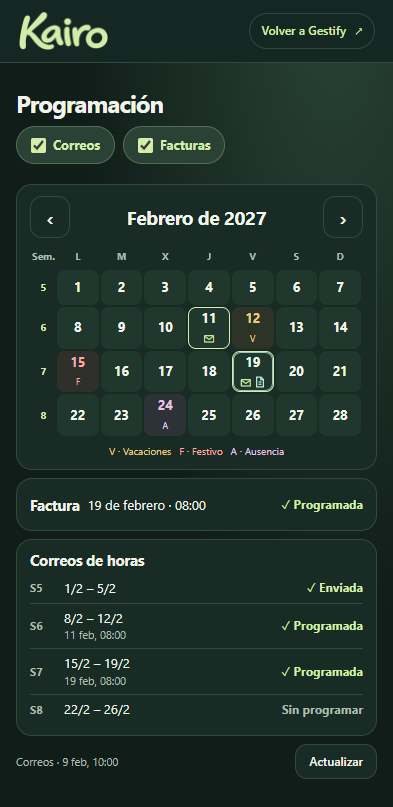
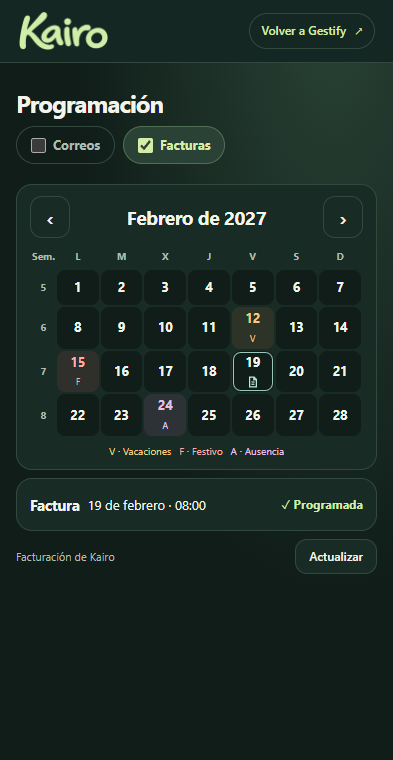
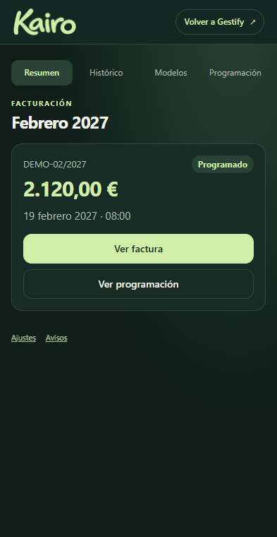
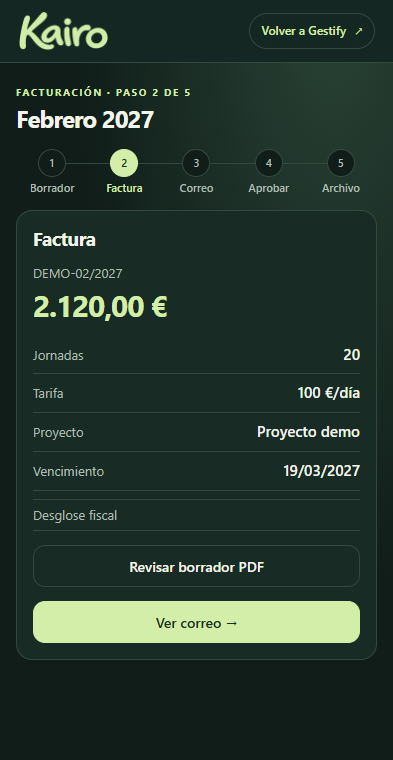
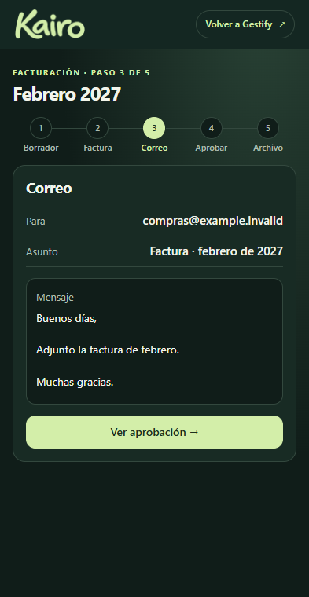
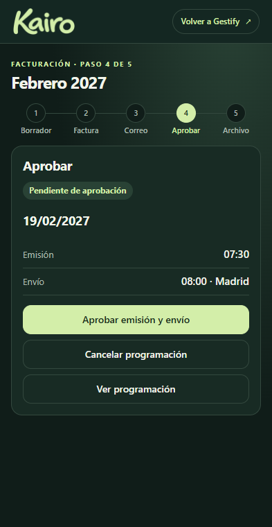
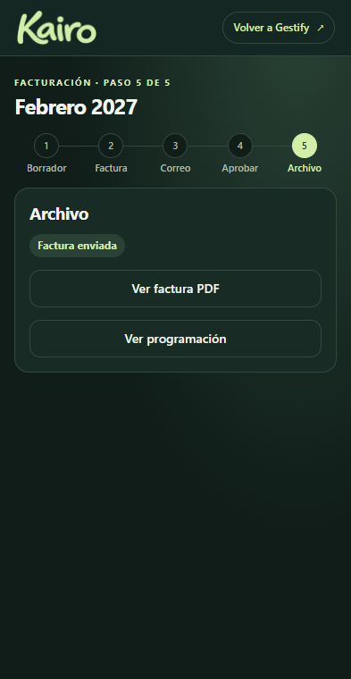
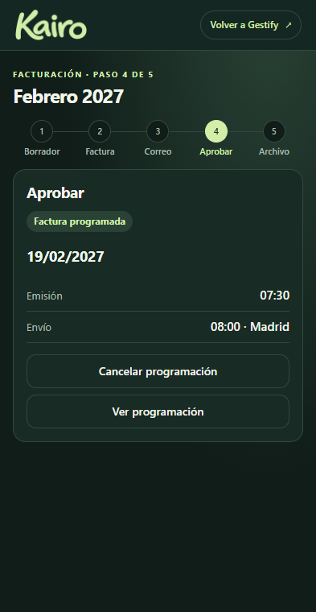

Facturas y programación
Capturas de Kairo a 393 px con datos de ejemplo. Pulsa una pantalla para ampliarla.
Programación mensual
K7 · ProgramaciónEl día 19 coinciden un correo y la factura.
K8 · Solo facturasEl filtro conserva la factura y las incidencias de jornada.
Desde Kairo Casa
K0 · ResumenAbre la factura o la programación de ese mes.
Pasos de una factura
K1 · BorradorGestify entrega los datos del mes.K2 · FacturaImporte, jornadas y PDF.
K3 · CorreoEl mensaje queda separado de los destinatarios.
K4 · AprobarFecha, horas y confirmación explícita.
K5 · ArchivoFactura enviada y acceso a su PDF.
K6 · Factura programadaEl estado que devuelve Kairo tras aprobar.